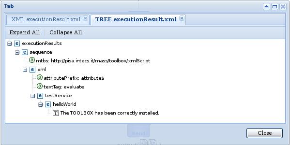
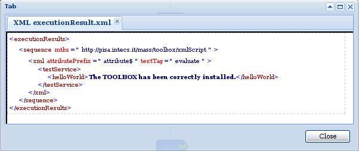
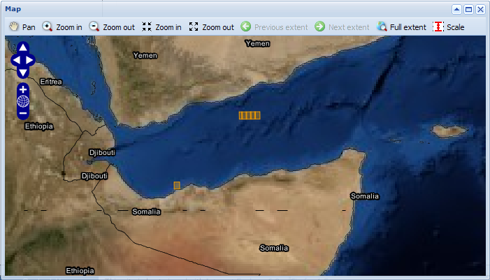
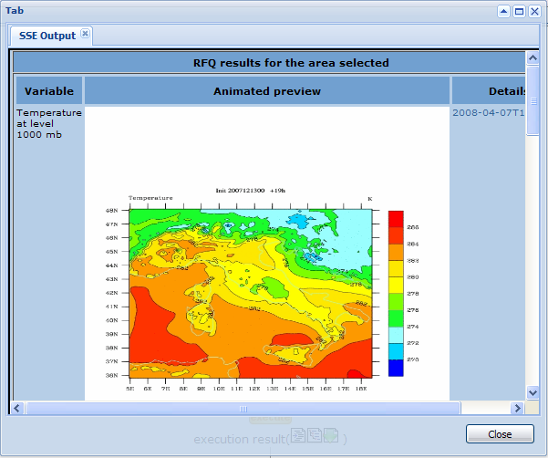
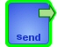
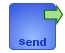
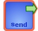

Flow icons description
In the following a description of the flow icons and their meaning for synchronous and asynchronous instances is reported.
This icon is displayed only if the error email report is activated. By clicking on this icon it is possible to display a copy of the error report email sent to the SSE or to the other recipients defined in the TOOLBOX configuration procedure.
This icon is displayed only when a request is in waiting status: the SOAP message has been received but the the TOOLBOX has not yet executed the First script corresponding to the request. This can happen in the following two cases: the queuing mechanism is on and the request has not been scheduled yet; the service is suspended in SOFT mode;
This icon allows displaying an instance resource (input message, output message, execution results) in a tree format.

This icon allows displaying an instance resource (input message, output message, execution results) in XML format.

 In Windows explorer the "Copy to clipboard" functionality is provided for the XML format. Click on the "Copy to clipboard" link to copy the content of the window in the clipboard.
In Windows explorer the "Copy to clipboard" functionality is provided for the XML format. Click on the "Copy to clipboard" link to copy the content of the window in the clipboard.
 This icon is shown is shown when a service result -> GML stylesheet is associated to the service. Clicking on this button will display a map where result items are graphically overimposed. The following picture gives an example:
This icon is shown is shown when a service result -> GML stylesheet is associated to the service. Clicking on this button will display a map where result items are graphically overimposed. The following picture gives an example:

This icon is shown is shown when an SSE stylesheet is associated to the service. Clicking on this button will display the instance result using the SSE stylesheet. The following picture gives an example:

Synchronous instance flow
Receive
The TOOLBOX is receiving the SOAP message.
The SOAP message has been received and correctly handled.
The SOAP message has been received but an error is occurred.
Execute
The TOOLBOX is not executing yet the script.
The TOOLBOX is executing the script related to the SOAP message received in the previous step.
The script related to the SOAP message received in the previous step has been correctly executed.
An error occurred while executing the script related to the SOAP message received in the previous step.
Send
The response has not bee sent to the SOAP client yet.
The TOOLBOX is sending back the response to the SOAP client
The response has bee sent to the SOAP client.
An error occurred while sending back the response to the SOAP client (i.e. validation error).
Asynchronous instance flow
Receive
This task is not active yet.
The TOOLBOX is receiving the SOAP message.
The SOAP message has been received and correctly handled.
The SOAP message has been received but an error is occurred.
Execute first script
This task is not active yet.
 The TOOLBOX is executing the first script related to the SOAP message received in the previous step.
The TOOLBOX is executing the first script related to the SOAP message received in the previous step.
 The first script related to the SOAP message received in the previous step has been correctly executed.
The first script related to the SOAP message received in the previous step has been correctly executed.
An error occurred while executing the script related to the SOAP message received in the previous step.
Execute second script
This task is not active yet.
The TOOLBOX is executing the second script related to the SOAP message received in the previous step.
The second script related to the SOAP message received in the previous step has been correctly executed.
An error occurred while executing the second script related to the SOAP message received in the previous step.
Execute third script
 This task is not active yet.
This task is not active yet.
The TOOLBOX is executing the third script related to the SOAP message received in the previous step.
The third script related to the SOAP message received in the previous step has been correctly executed.
 An error occurred while executing the third script related to the SOAP message received in the previous step.
An error occurred while executing the third script related to the SOAP message received in the previous step.
Send
The response has not bee sent to the SOAP client yet.
The TOOLBOX is sending back the response to the SOAP client. The number of retry still available is displayed.
The response has bee sent to the SOAP client.
An error occurred while sending back the response to the SOAP client (i.e. validation error, unable to push back he response).